Metabolic Bone Disease: Osteomalacia, Paget's & Osteogenesis Imperfecta
- Osteomalacia is a defect in mineralization, not a loss of bone. There is plenty of matrix; it just isn't mineralized. Rickets in children (bowed long bones), osteomalacia in adults. Vitamin D deficiency sits at the centre.
- The lab pattern is what separates it from osteoporosis: ↓ Ca, ↓ PO4, ↑ alkaline phosphatase, ↓ urinary Ca. In osteoporosis all of those are normal. The X-ray sign is a pseudofracture (Looser zone). Getting this wrong means treating a vitamin D deficiency with a bisphosphonate.
- Paget's is excessive destruction and repair — overactive osteoclasts, then overactive osteoblasts laying down structurally abnormal, fragile bone. Localized, not systemic. Usually asymptomatic, found on a routine X-ray or an isolated high ALP.
- Paget's labs: very high ALP with normal calcium and normal phosphate. The lesions are highly vascular — which explains the warmth over the bone and the high-output cardiac failure. Zoledronate is the treatment.
- Osteogenesis imperfecta is a type 1 collagen disorder (COL1A1/COL1A2, 85–90%). Fragility fractures, short stature, bowed long bones, blue sclerae, hearing loss, dentinogenesis imperfecta — and because collagen is everywhere, aortic root dilatation too. IV bisphosphonates are the mainstay.
Learning Objectives
- Describe the clinical presentations of, and explain the management of, osteomalacia.
- Describe the clinical presentations of, and explain the management of, Paget's disease.
- Describe the clinical presentations of, and explain the management of, osteogenesis imperfecta.
Osteomalacia and Rickets
Too little mineral for the matrix that is there — and the disease most often mistaken for osteoporosis.
What Osteomalacia Is
A defect in bone matrix mineralization. The osteoid is laid down normally; it simply does not get mineralized. Same disease, two names depending on when it strikes:
| Age | Name | What you see |
|---|---|---|
| Childhood — growth plates still open | Rickets | Deformity at the growing ends of bone — classically bowing of the long bones, because unmineralized bone bends under weight |
| Adulthood — growth plates closed | Osteomalacia | No growth deformity; weak bones that fracture, plus pain and muscle weakness |
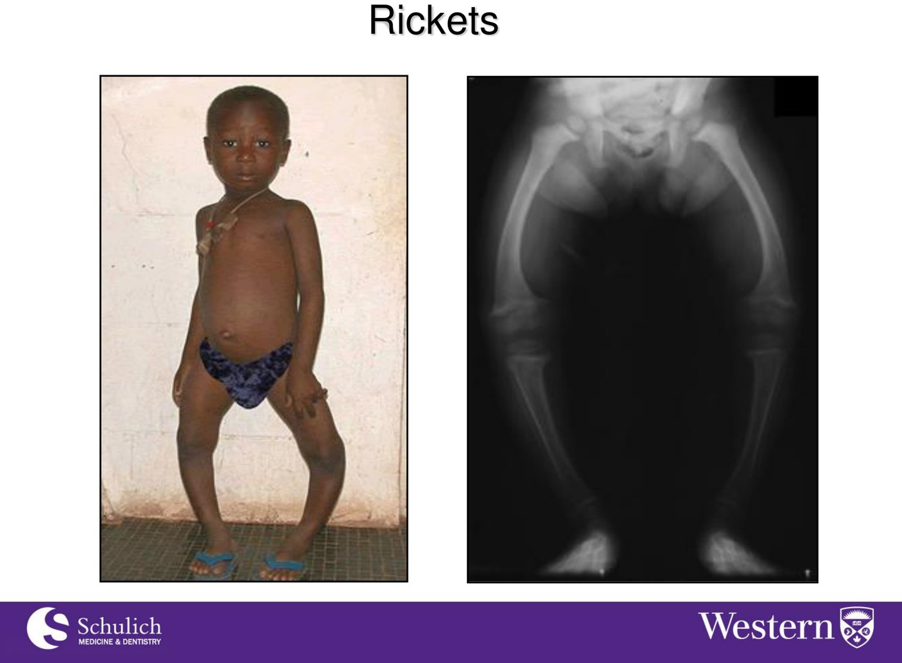
Rickets. The bowing is the hallmark — unmineralized bone deforming under load. On the radiograph the metaphyses are widened, cupped and frayed, because that is where growth and mineralization should be happening.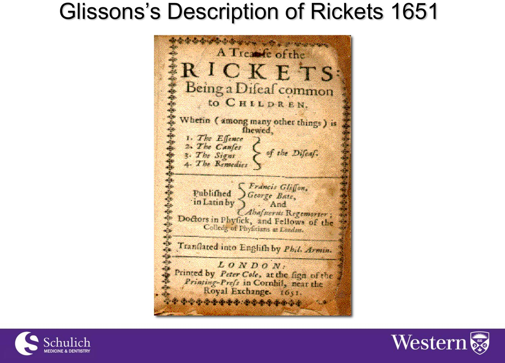
Glisson, 1651. "A disease common to children" — described nearly four centuries ago, and still with us wherever sunlight, diet or absorption fail.- The mineralization defect produces weak bones that fracture — and it is often mistaken for osteoporosis.
- Malabsorption syndromes are a common cause — celiac disease in particular.
- Proximal muscle weakness (myopathy) can be severe and contributes to falls. A patient who is falling and fracturing has two problems from one deficiency.
Both present as fragility fractures in someone with thin-looking bones on imaging, and osteomalacic bone can look osteopenic on a radiograph. But they are different problems: osteoporosis is too little bone, osteomalacia is bone that is not mineralized.
The blood work separates them, and it is not subtle. In osteoporosis, calcium, phosphate and alkaline phosphatase are all normal — that is why the work-up there is aimed at excluding secondary causes. In osteomalacia they are frankly abnormal.
The consequence of getting it backwards is real: an antiresorptive given to someone with uncorrected vitamin D deficiency and hypocalcemia treats the wrong mechanism and can drive the calcium lower still. Correcting vitamin D and calcium comes first, always.
Vitamin D: Why It Sits at the Centre
Vitamin D is essential for calcium absorption, and adequate calcium absorption is what prevents secondary hyperparathyroidism and limits bone resorption. Take the vitamin D away and the sequence runs itself: less calcium absorbed → PTH rises to defend the serum calcium → PTH leaches calcium out of bone. The skeleton pays for the gut's failure.
Etiology — four routes to a deficiency
| Category | Mechanism |
|---|---|
| 1. Decreased availability of vitamin D | Insufficient sunlight exposure · nutritional deficiency · malabsorption · hydroxylation defects · nephrotic syndrome |
| 2. Liver disease | The site of 25-hydroxylation — the first activation step |
| 3. Chronic renal failure | The site of 1α-hydroxylation — the second, rate-limiting activation step |
| 4. Anticonvulsant therapy | Induces hepatic enzymes that accelerate vitamin D catabolism |
Note that categories 2 and 3 map onto the two hydroxylation steps of vitamin D activation — liver first, kidney second. Knowing where each organ sits in the pathway is enough to reconstruct this list. See vitamin D and calcium homeostasis for the pathway itself, and 2.2 for what PTH does with the result.
Four separate things go wrong at once, and none of them individually would be enough:
Formation and processing of vitamin D may be impaired · exposure to sunlight may be limited · dietary sources provide little vitamin D · and adherence to supplementation may be inconsistent. Skin synthesis falls, the person goes outside less, the diet was never a real source, and the tablet that would fix it does not reliably get taken.
How much is actually in things
| Source | Vitamin D content |
|---|---|
| Sunlight | The main source — and the one that fails first |
| Multivitamin pill | 200–1000 IU |
| Calcium tablet containing vitamin D | 120–1000 IU |
| Fortified milk | Fluctuates — 37–50 IU/100 mL, or 111–150 IU per cup |
| Dedicated supplements | 400 or 1000 IU per tablet |
The practical point is the size of the numbers. A cup of fortified milk supplies roughly a tenth of a 1000 IU tablet, so diet alone will not correct a real deficiency — which is exactly why sunlight is listed as the main source and why supplementation is the intervention.
Investigations and Treatment
| Modality | Finding |
|---|---|
| Laboratory | ↓ calcium and ↓ phosphate · ↑ alkaline phosphatase · ↓ urinary calcium |
| Radiology | Pseudofractures — healed microfractures. Bone may also simply look osteopenic |
| Bone biopsy | The gold standard, but usually not necessary |
Alkaline phosphatase is the marker of bone turnover here, and it is raised for a specific reason: osteoblasts are working hard, producing matrix that never gets mineralized. High ALP means active bone formation — it will come up again in Paget's, for a related reason.
Urinary calcium is low because there is barely any calcium being absorbed to excrete, and PTH is retaining what little there is.
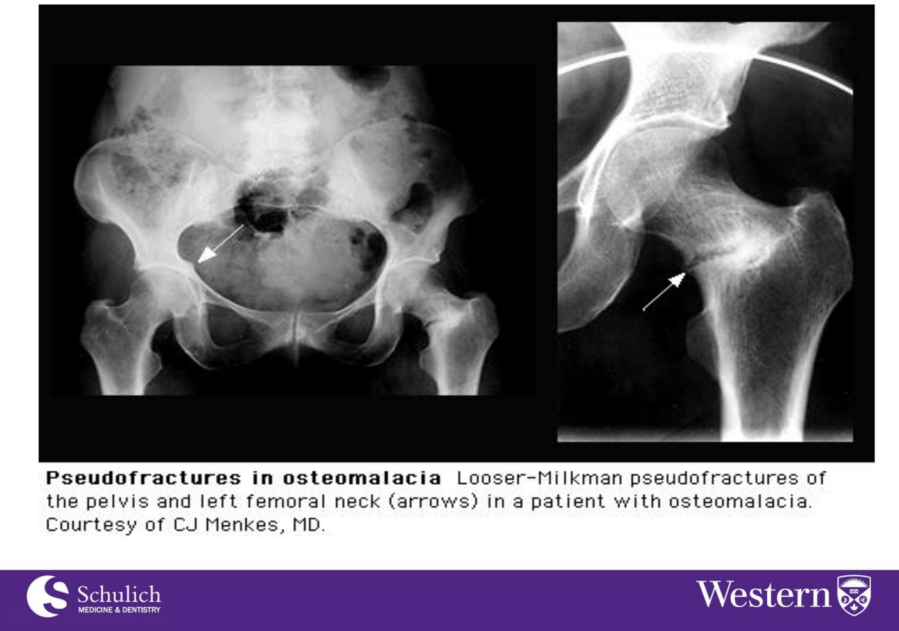
Treatment
It depends on the underlying cause — correcting a celiac enteropathy is as much part of the treatment as the supplement. Then replace what is missing: vitamin D, plus phosphate and calcium supplements if those are low.
| Baseline 25-hydroxyvitamin D | Regimen |
|---|---|
| < 30 nmol/L | 50,000 IU ergocalciferol for 12 weeks, then 800–2000 IU daily |
| 30–75 nmol/L | 800–2000 IU daily |
| Repeat the level in 3 months in either case | |
A 23-year-old woman with celiac disease presents with falls, muscle weakness, and the femoral neck film above. The diagnosis is pseudofractures due to vitamin D deficiency — and every element of the stem points there: celiac disease is the classic malabsorptive cause, proximal myopathy explains the falls, and the lucency is a Looser zone.
The distractors are the two diseases it gets confused with. Atypical fracture from bisphosphonate use is subtrochanteric, in someone who has been on the drug for years — not a 23-year-old. Femoral neck fracture due to osteoporosis would be a true fracture, and osteoporosis at 23 with normal-looking labs is not the story. The age and the celiac history are the whole question.
Paget's Disease of Bone
Bone remodelling gone into overdrive in one place — fast, disorganized, vascular, and usually silent until an X-ray or a blood test finds it.
Paget's Disease
A metabolic disease characterized by excessive bone destruction and repair — a localized disorder of bone remodelling. The sequence has two steps, and both matter:
- Increased osteoclastic activity leads to increased bone resorption.
- Osteoblastic activity increases in response, producing new bone — but new bone that is structurally abnormal and fragile.
That is the central idea: the problem is not that too little bone is made. Often more bone is made. It is the wrong bone — laid down too fast and in a disorganized pattern, so it is bigger, denser on film, and weaker in life.
It is relatively common: 5% of the population, rising to 10% of those over 80.
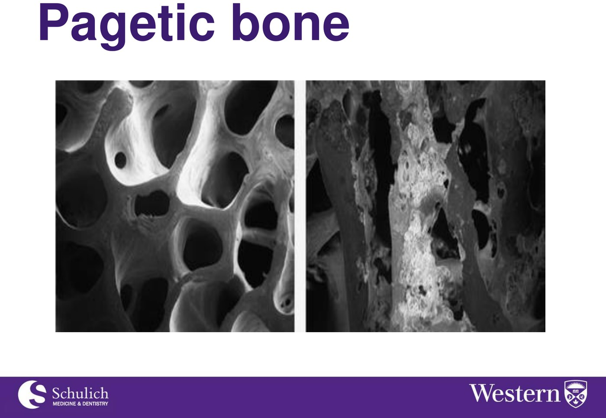
Clinical features
| Feature | Detail |
|---|---|
| Usually asymptomatic | Found on routine X-rays or an elevated alkaline phosphatase. This is how most cases present |
| Severe bone pain | Pelvis, femur, tibia |
| Skeletal deformities | Bowed tibia, kyphosis, frequent fractures |
| Skull involvement | Headaches, increased hat size, deafness |
| Increased warmth over the bone | Due to increased vascularity — a physical sign you can elicit at the bedside |
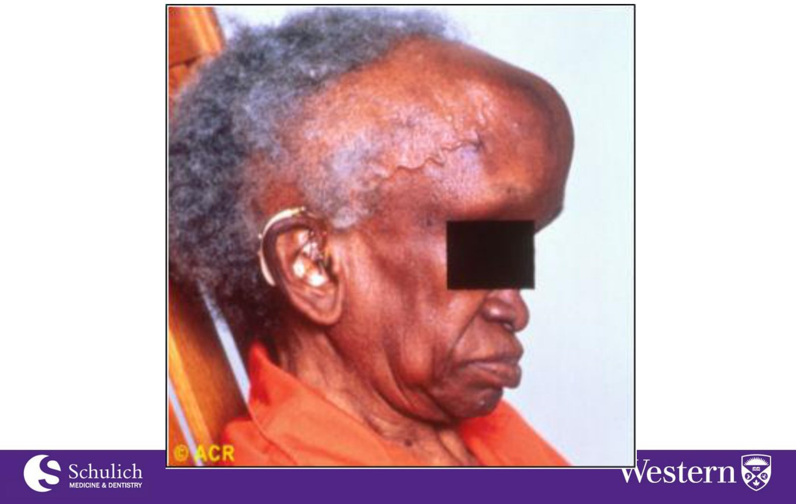
Skull involvement, clinically. The vault expands — which is what "increased hat size" actually means as a history question.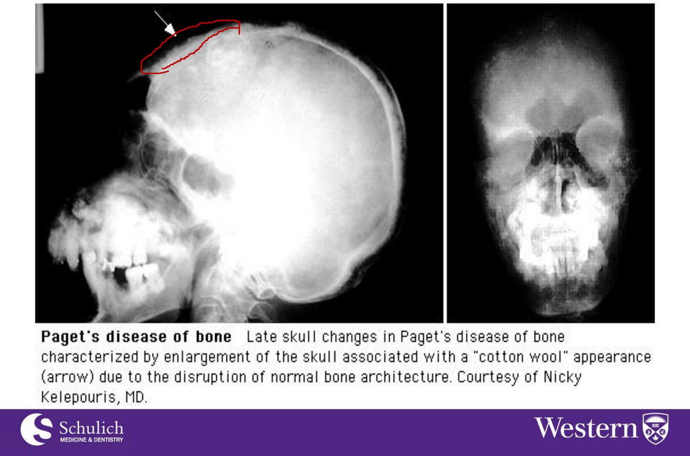
The same thing on film. An enlarged skull with a patchy, fluffy "cotton wool" appearance from the disruption of normal bone architecture. Courtesy of Nicky Kelepouris, MD.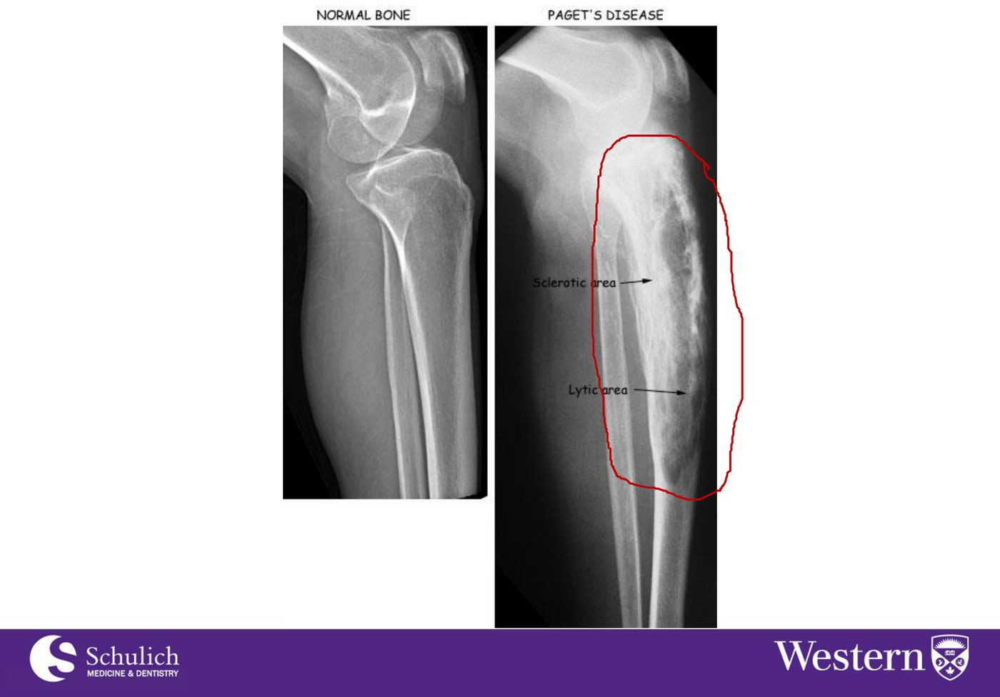
Investigations
| Finding | |
|---|---|
| Alkaline phosphatase | Very high — the osteoblasts are working furiously |
| Calcium | Normal, or increased in the case of immobility |
| Phosphate | Normal |
| Urinary hydroxyproline | Increased — a marker of bone turnover, released as collagen is broken down |
| Bone scan | For the extent of disease — which bones are involved, and how many |
| Radiographs | The initial lesion may be destructive and radiolucent; involved bones are expanded and denser than normal, with multiple fissure fractures |
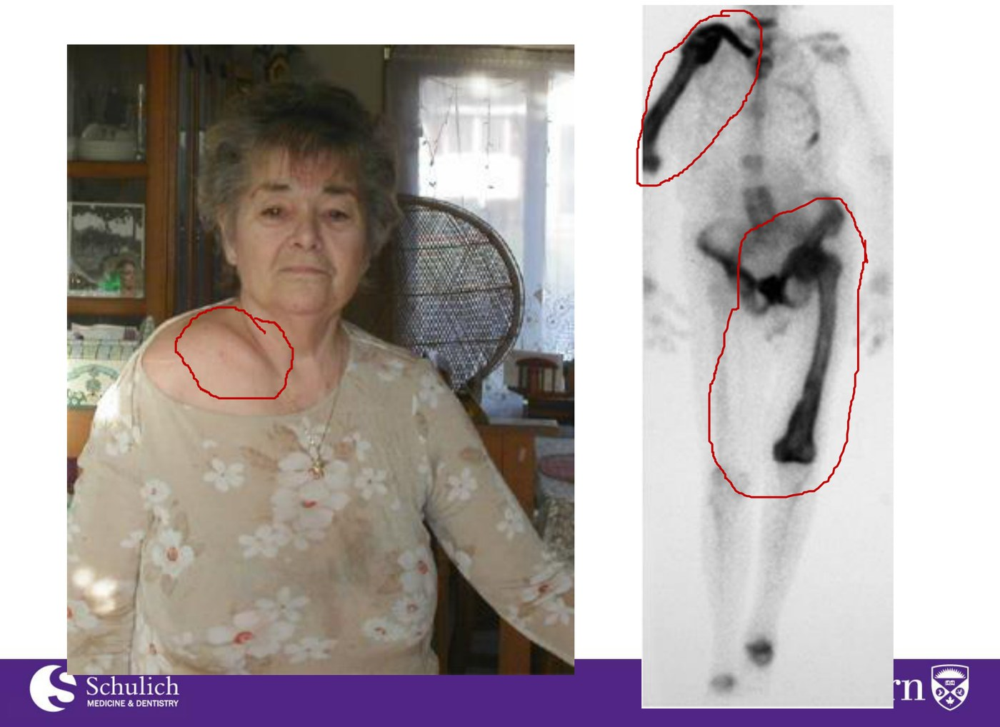
| Calcium | Phosphate | Alkaline phosphatase | |
|---|---|---|---|
| Osteomalacia | ↓ | ↓ | ↑ |
| Paget's disease | Normal (↑ if immobile) | Normal | ↑↑ very high |
| Osteoporosis | Normal | Normal | Normal |
Alkaline phosphatase is raised in the first two and normal in the third, so ALP is the test that says "this is not osteoporosis." Calcium and phosphate then split the other two: low in osteomalacia, normal in Paget's.
An isolated raised ALP with a normal calcium, in a well patient, is the classic accidental route into a diagnosis of Paget's — provided the liver has been excluded as the source first.
Complications
| Complication | Mechanism |
|---|---|
| 1. Fractures | The new bone is structurally abnormal and fragile |
| 2. Hypercalcemia | Only in the case of immobility — resorption continues while formation stalls |
| 3. Cranial nerve compression — deafness | Expanding skull bone narrows the foramina the nerves run through |
| 4. Spinal cord compression | Expanded vertebrae encroaching on the canal |
| 5. Osteosarcoma — 1–3% | Signalled by marked bone pain, a new lytic lesion, and a rising alkaline phosphatase |
| 6. High-output congestive heart failure | Due to increased vascularity — pagetic bone is a low-resistance shunt, and enough of it raises cardiac output until the heart cannot sustain it |
| 7. Osteoarthritis | Deformed bone alters joint mechanics at the joints it abuts |
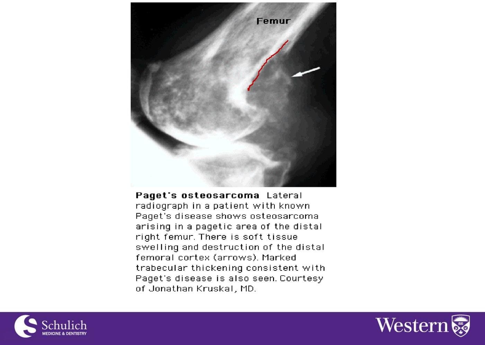
Treatment and Who to Treat
- Symptomatic: analgesia for the pain.
- Bisphosphonates — zoledronate. These target the overactive osteoclast that starts the whole cycle.
- Calcitonin as an alternative.
Indications for treating an asymptomatic patient
In asymptomatic individuals with evidence of active disease — an elevated ALP, or scintigraphy showing active lesions — treatment should be considered when there is:
- Evidence of disease in the skull, long bones, spine, or bone abutting a joint.
- A surgical procedure planned in a pagetic site.
- Paget's disease and congestive heart failure.
Each maps onto a complication you are trying to prevent rather than treat. Skull, spine and bone abutting a joint are exactly the sites where expansion causes something irreversible — deafness, cord compression, secondary osteoarthritis. Congestive heart failure is the high-output state, and reducing turnover reduces the vascularity driving it.
Surgery in a pagetic site is the one that is easy to forget and the most immediately dangerous: pagetic bone is highly vascular, so operating on it risks serious haemorrhage. Treating beforehand reduces the vascularity and makes the operation safer.
Paget's of the left femur, ALP three times the upper limit of normal. Best treatment: zoledronate — a potent IV bisphosphonate, and first-line for active Paget's.
The distractors are worth separating. Alendronate is a bisphosphonate too and does work, but the IV agent is the preferred first-line here and gives a more durable remission. Denosumab is an antiresorptive used in osteoporosis, not a Paget's drug. And teriparatide is the one to actively avoid: it is an anabolic that stimulates bone formation, and it is contraindicated in Paget's disease and in unexplained elevations of alkaline phosphatase, precisely because of the baseline osteosarcoma risk this disease already carries.
Osteogenesis Imperfecta
Not a mineral problem at all — a defect in the collagen scaffold that mineral is supposed to be laid on. And because collagen is everywhere, so are the manifestations.
Osteogenesis Imperfecta
- Among the more common of the rare bone disorders. Incidence 1 in 15,000–20,000 live births.
- Mostly involves mutations in type 1 collagen — COL1A1 and COL1A2 account for 85–90% of cases.
- 16 subtypes identified, and the number is growing.
Clinical features
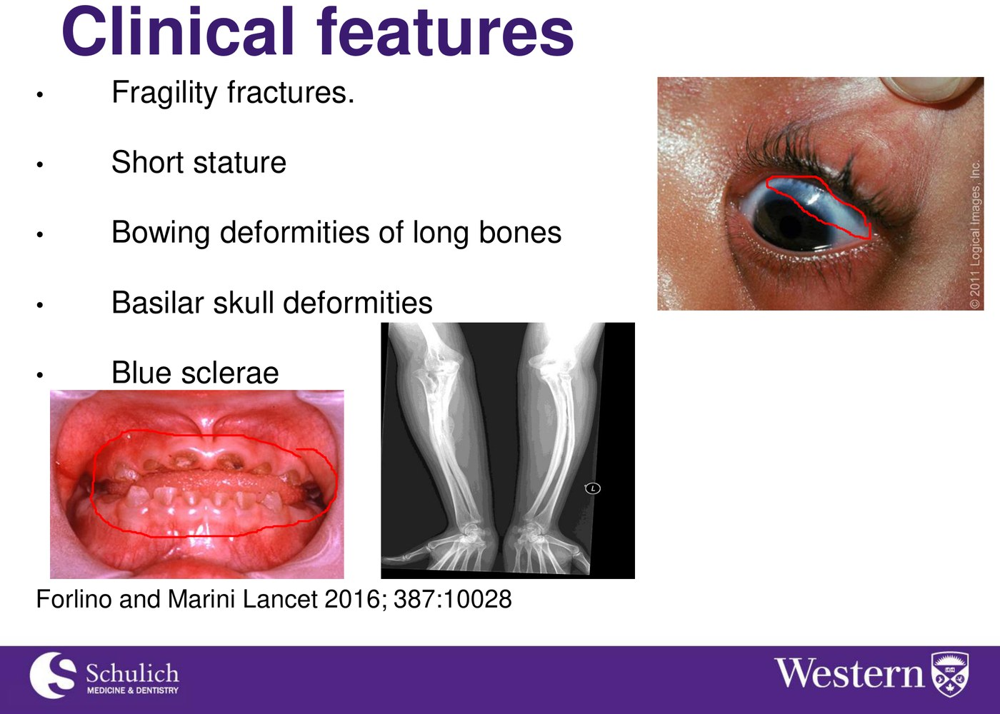
And beyond the skeleton: hearing loss · dentinogenesis imperfecta · aortic root dilatation and valvular insufficiency · wormian bones · pectus excavatum or carinatum.
Both answers are the same answer: type 1 collagen is not a bone protein, it is a connective tissue protein. Bone is where the consequences are loudest, but it is not the only place the defect exists.
The sclera is largely type 1 collagen. Make it thinner and more translucent and the choroid's pigment shows through from behind — the blue is not a pigment, it is a see-through sclera.
Collagen is also present in the lining of blood vessels, which is why aortic root dilatation and valvular insufficiency belong on the list — and why an echocardiogram is part of routine surveillance rather than an afterthought. The same logic covers the teeth (dentine is collagen-based) and the hearing loss (the ossicles and their attachments).
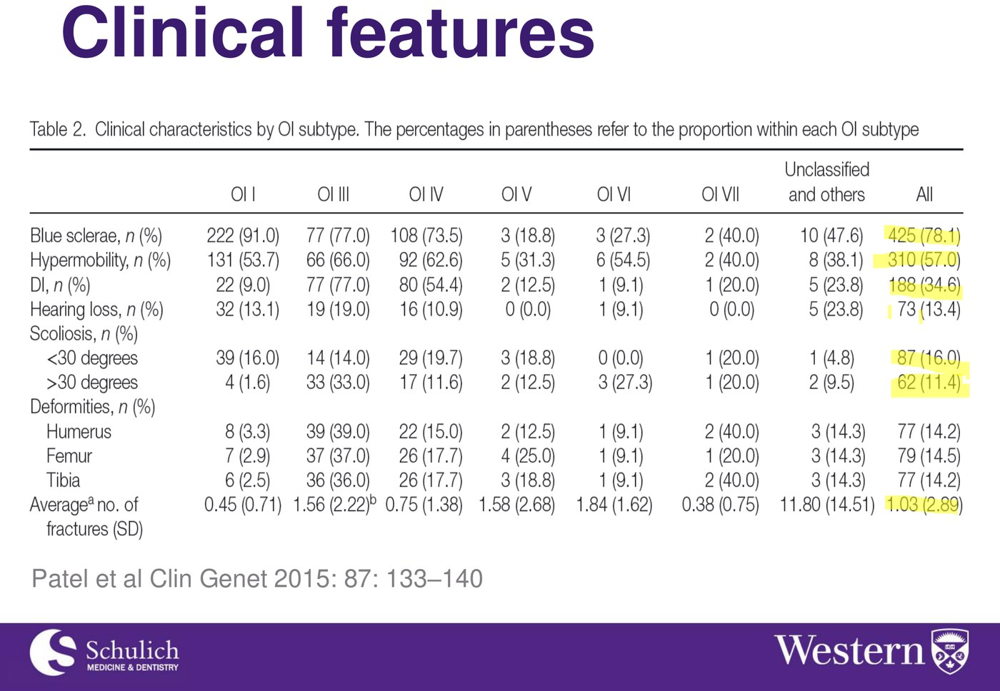
Management and Prognosis
Lifelong monitoring
The surveillance list follows directly from the list of affected tissues:
| What | How often |
|---|---|
| Growth and head circumference | Ongoing |
| Hearing test, bone mineral density, ECG and echocardiogram | Every two years |
| Neurologic examination and cranial assessment | As indicated by symptoms or behavioural changes — the concern is basilar invagination |
| Skeletal radiographs | Every 1–2 years |
| Spirometry | Yearly — chest wall deformity and scoliosis restrict lung volumes |
Management of the bone disease
- IV bisphosphonates are the mainstay of treatment.
- Optimal duration has not been studied.
- Indications to treat: long bone deformities · vertebral compression fractures · more than 3 fractures per year.
Prognosis
Highly variable. Type 1 has a normal life span. Type 2 is lethal in the perinatal period. The subtype is the prognosis.
A 17-year-old woman with OI type 1, 5 long-bone fractures in the last year without trauma and without atypical fractures, regular periods, normal vitamin D. The answer is zoledronate — she meets the treatment indication (> 3 fractures per year) and IV bisphosphonates are the mainstay.
The stem does real work ruling things out: normal vitamin D excludes osteomalacia as the reason she is fracturing, regular periods exclude hypogonadism as a secondary cause, and no atypical fractures means she is not already suffering from an antiresorptive.
On the distractors: teriparatide is an anabolic contraindicated in young adults with open epiphyses because of osteosarcoma risk — the same contraindication family as Paget's above, and directly relevant at 17. Raloxifene is a SERM used for postmenopausal osteoporosis and has no role here. Denosumab is not the established mainstay in OI, and stopping it triggers rebound bone loss and vertebral fractures — a poor choice in someone facing decades of treatment.
Built from Dr. Tayyab S. Khan's "Metabolic Bone Disease" slide deck, which covers osteomalacia, Paget's disease and osteogenesis imperfecta as one lecture. All radiographs, specimen images, clinical photographs and tables are taken from that deck, with its original citations kept in the captions (Forlino and Marini, Lancet 2016;387:10028; Patel et al., Clin Genet 2015;87:133–140; images courtesy of CJ Menkes, Nicky Kelepouris and Jonathan Kruskal). Added from outside the deck and flagged where it appears: the explanation of why teriparatide is the wrong answer in both quiz cases — it is contraindicated in Paget's disease, in unexplained elevations of alkaline phosphatase, and in young adults with open epiphyses, because of baseline osteosarcoma risk — verified against the teriparatide prescribing information, alongside the standing of zoledronate as first-line for active Paget's. The mechanistic notes on why sclerae are blue, why the aorta is involved, why pagetic bone bleeds at surgery, and the three-disease lab comparison table are added context. Osteoporosis is covered separately in 2.5; the vitamin D and PTH pathway in 2.2 and Week 1.